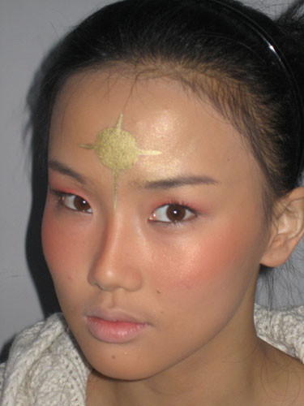
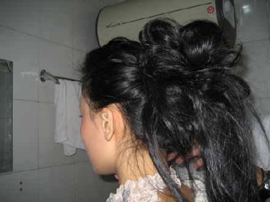
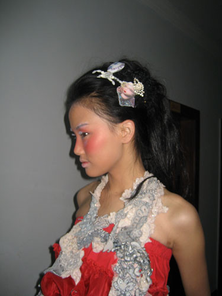
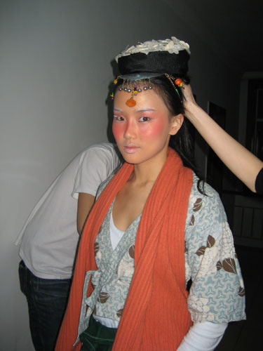
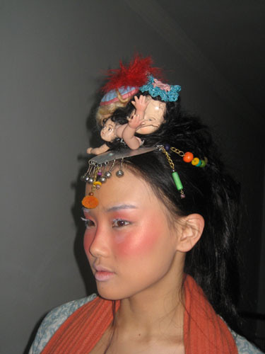

经过8小时的艰难车程,终于来到了雪乡,一片漆黑,什么也看不见...这里要比哈尔滨冷多了,我开始担心了,明天一定会冻僵的.
当地的酒店都是些小平房,只有两层楼高,非常简陋,我们住的这家已经是当地最好一家了.因为主人姓刘所以这家店叫<老刘饭店>,主人很好客,端出了最好吃的饭菜来招待我们.大家已经都饿坏了,吃起饭来如狼似虎，惨不忍睹，哈哈！
风卷残云过后,11点多,大家都已经很疲倦了,但还要坚持进行第二天的造型试装.这次请来化妆师,发型师和造型师都来自香港,所以我称之为"香港三人组".
每次遇到新的化妆师,都会很不放心地问她们会把我化成什么样子.这次根据导演要求，把我装扮成一个晒的黑红黑红的“ 小农民”,因为要在雪地拍摄,所以希望让我和白色的雪景形成明显的反差.我非常盼望着尝试这个“农民造型”。

额头上化了一个金色的太阳,很特别,我很喜欢。

瞧这个发型,其实当中用了不少假发噢!哈

第一个造型完成,大红色的裙子,斑马袜子,和红色高根鞋,好象不怎么农民,反正有点雪乡公主的味道,导演站在一旁,开始研究我的造型,看他的表情就知道他很满意拉.我心想:明天如果真的要这样穿,岂不是要冻死,就连刚才穿着羽绒服站在外面都受不了,恐怕连跨大门也很困难吧!还是先进行下一个造型再说吧!

造型二:不太喜欢头上这顶帽子,瞧我一脸的不愿意，虽然看起来还好。。。

造型三:看我的表情就知道我最喜欢这套拉,不轮是衣服还是裤子还是围巾都搭配的很好,很有小农民的感觉,最喜欢的就是头上的饰品,三个来自不同国家的残疾娃娃的头和手组装起来的,很诡异,也非常特别,再家上这个装面,是不是很HIGH,感觉到我已经被冻住了吧?!
大家都很满意,导演宣布就用这个造型了.
待续待续。。。。。。